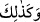
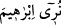
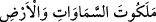
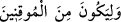

olduğunu söyler.
Kâşifî Farsça tefsirinde şöyle der:
“__WORD__” Ona göstermiş olduğumuz kavminin sapkınlığı, aynı şekilde ( __WORD__ )
İbrâhim’e de gösteriyorduk ( __WORD__ )
Arşın zirvesinden yerin altına dek semaların ve yerlerin acayip ve ilginç hallerini Hak
teâlâ’nın kudretine delil olsun diye ona âşikar ettik ki ( __WORD__ ) Şüphesi
kalmayanlardan olsun veya istidlâl ilminde muvaffak olsun diye.
“Meâlim”de şöyle anlatılır:
Yeryüzünün padişahı olan Nemrud b. Ken’an, Bâbil şehrinde oturuyordu. Bir gece
rüyasında, o beldenin ufkunda, parlaklığı karşısında güneş ve ayın nurunun yok olduğu
bir yıldızın doğduğunu gördü. Büyük bir korkuyla uyandı. Ülkenin kâhin ve bilgeleri bu
rüyayı şu şekilde tabir ettiler:
“Bu yılda Bâbil şehrinde talihi kutlu birisi yokluk halvethânesinden/âleminden varlık
sahrası fezasına gelecek, senin ülkenin halkının helâki onun eliyle olacak. Bu çocuk
henüz ana rahmine düşmedi.”
Nemrud kadınlarla kocalarının ayrı kalmalarını emretti ve onsekiz kişiye bir kişi
görevlendirdi.
Nemrud’un mahremi ve yakınlarından olan Âzer bir gece karısı Ûfî binti Nemr ile
görevlilerden gizli olarak beraber oldu. Eşi hamile kaldı. Ertesi gün kâhinler Nemrut’a
o çocuğun ana rahmine düştüğünü söylediler. Nemrut öfkelendi. Her hamile kadının
başında bir görevlinin bulunmasını, eğer erkek çocuk dünyaya gelirse öldürmelerini
emretti.
Hamile olanları araştıran kadınlar, İbrahim’in annesinde hamilelik belirtisi
görmediklerinden, ondan ayrıldılar. Artık kimse ona dikkat etmedi. Doğum anı
yaklaştığında Ûfî erkek çocuk dünyaya gelirse hemen Nemrut’un adamlarına haber
ulaşır ve derhal onu öldürürler diye korktu. Bir bahane ile şehirden çıkıp dağda bir
mağarayı seçti.
O mağarada İbrahim’i doğurdu. Hırkaya sardı, oraya bırakıp mağaranın girişini taşla
kapattı. Kendisinin hamile olduğundan haberdar olan kocası Âzer’e, Nemrut’un
memurlarından korkusundan sahraya gittiğini, bir erkek çocuk doğurduğunu, onun da
hemen öldüğünü, toprağa gömüp geri geldiğini söyledi. Âzer inandı.
Ûfî ertesi gün mağaraya geldi. İbrahim’in birinden süt, diğerinden bal akan
parmaklarını emdiğini gördü. Bu durumu gören Ûfî sevindi ve şehre geri döndü.
Beslenme sütünü ilâhî inayet memesinden içen İbrahim bir günde, başka bir çocuğun bir
ayda büyüdüğü; bir ayda, başkalarının bir yılda büyüdüğü kadar gelişiyordu.
Yüzüyle gönül aydınlatan yeni doğmuş ay gibi
Gün be gün nuru artıyordu
On beş aylık olunca, on beş yaşındaki çocuklarla denk oldu. Kaldığı yerden/evden
dışarı çıktı. Yedi, on üç veya on yedi yıl mağarada kaldığı rivayet edilir.